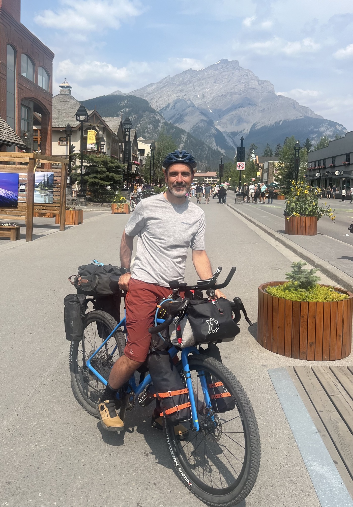

Le jour du Grand Départ

Cette fois ça y est: c'est MON Grand Départ. Parcours idéal pour du gravel, paysages grandioses. Campement au bord du lac Spray Lake Reservoir, nous sommes juste 2 cyclistes. C'est top mais maintenant il faut avancer! Je découvre la solitude devant les grands espaces.